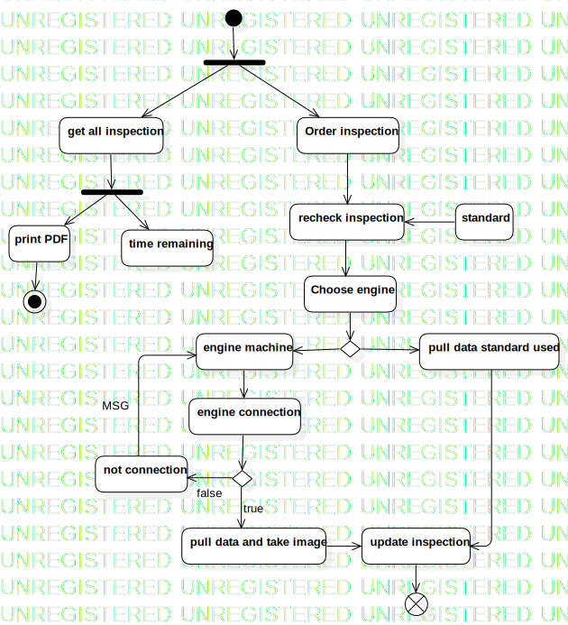

Activity
UMLActivity
Model
::
Inspection
::
Activity
Description
none
Diagrams

Activity
Nodes
ForkNode1
InitialNode1
get all inspection
Order inspection
recheck inspection
standard
Choose engine
DecisionNode1
pull data standard used
engine machine
engine connection
DecisionNode2
not connection
pull data and take image
update inspection
FlowFinalNode1
ForkNode2
print PDF
time remaining
ActivityFinalNode1
Edges
(InitialNode1→ForkNode1)
(ForkNode1→Order inspection)
(ForkNode1→get all inspection)
(Order inspection→recheck inspection)
(standard→recheck inspection)
(recheck inspection→Choose engine)
(Choose engine→DecisionNode1)
(DecisionNode1→pull data standard used)
(DecisionNode1→engine machine)
(engine machine→engine connection)
(engine connection→DecisionNode2)
false (DecisionNode2→not connection)
true (DecisionNode2→pull data and take image)
MSG (not connection→engine machine)
(pull data and take image→update inspection)
(pull data standard used→update inspection)
(update inspection→FlowFinalNode1)
(get all inspection→ForkNode2)
(ForkNode2→print PDF)
(ForkNode2→time remaining)
(print PDF→ActivityFinalNode1)
Properties
Name
Value
name
Activity
stereotype
null
visibility
public
isReentrant
true
isReadOnly
false
isSingleExecution
false
Owned Elements
Activity